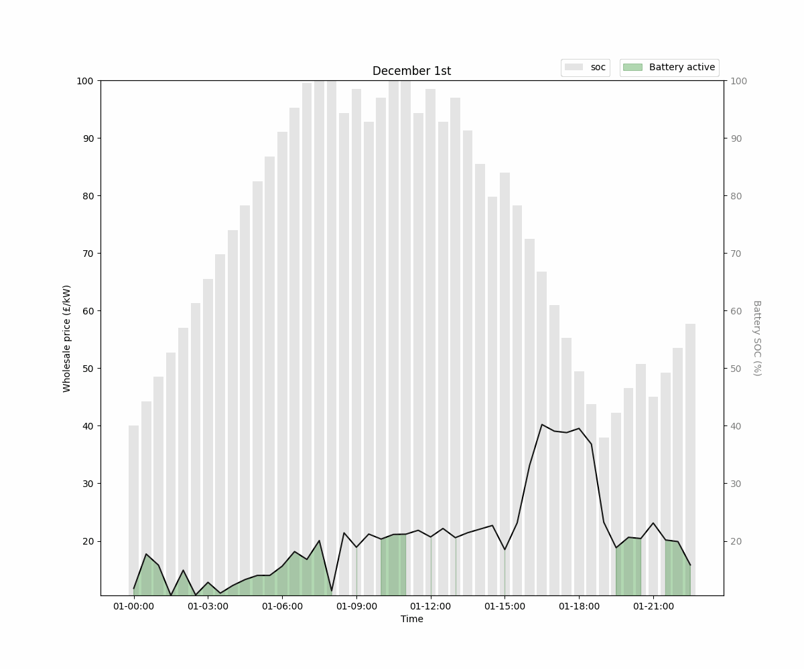

Welcome to Domestic Tariff Scheduler SDK
The Domestic Tariff Scheduler SDK is designed to help users easily leverage pricing data provided by Energy Suppliers. It enables smart actions on connected devices when prices are particularly low or high, simplifying the process of optimizing energy usage.
By handling the complexities of API integration, validation, and near-optimal usage, the SDK eliminates much of the usual hassle. You simply define your desired actions, configure your preferences, and let the SDK handle the rest.
For convenience, we recommend running the SDK on a Raspberry Pi, as it typically comes pre-installed with Python. This allows you to quickly install the SDK and start automating your energy-related actions.
Recognizing that users may have diverse configuration needs, the SDK is designed to be highly customizable. You can define how prices are selected, specify how pricing data is used, and integrate the SDK with any actions or devices you choose—all while maintaining flexibility and control.
What are tariffs
Tariffs are what Energy Suppliers use to offer pricing options for your electricity usage, these vary between suppliers are specialised to what type of customer you are, such as the Octopus Agile Tariff is set up in a way for people who are concious of the changes in prices throughout the day, allowing them to plan around these.
Do prices even change that much?
Yes they do, the prices are driven by supply and demand throughout the day, such as when people are awake or asleep, or fluctuations in generation such as it being windy during the day leading to cheaper electricity from renewable sources.
Here's an example of 11 days and a schedule generated from this SDK for Octopus Agile tariff, for a battery being charged under constant load:

Source: Linkedin - Craig White
Current supported supplier tariffs
- Octopus Agile Tariff
Prospective supplier tariffs
- Octopus Go (EV Tariff)
- Octopus Tracker
- E.ON Next Flex
Example usage
If you want to be featured on here send me a message on linkedin and I'll get it listed here :)
- battery.craigwh.it: Raspberry Pi4b using smart scheduling to do battery arbitrage to keep a server online